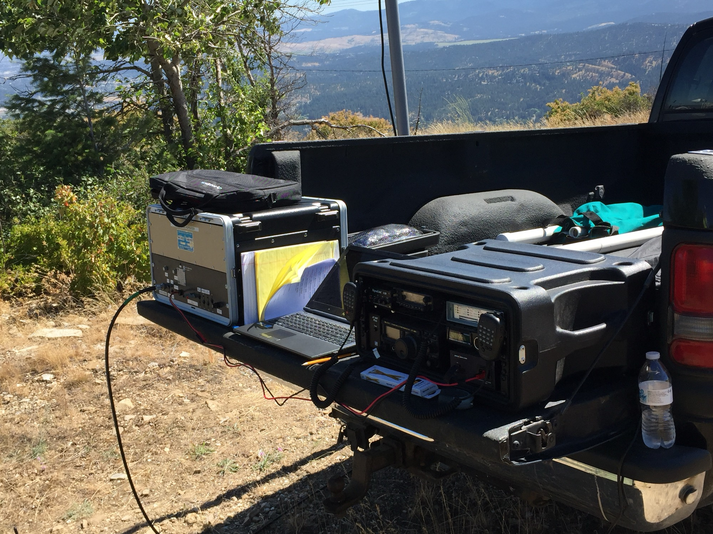
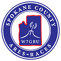

1What ARES-ACS is
The short version is in the box below. In one sentence: Amateur Radio Emergency Service, the ARRL’s volunteer emergency program. is open to any licensed ham and serves at community events, in weather spotting and on the air; Auxiliary Communications, Spokane County Emergency Management’s volunteer radio program. adds a county background check, and with it the ability to work inside an Emergency operations center., a hospital or a shelter when the county calls.
 At a glance
At a glance
- Who we are
- Licensed amateur radio (“ham”) volunteers who provide backup communications when normal systems are overloaded or down.
- Two hats
- ARES, a national ARRL program open to any licensed ham; and ACS, Spokane County Emergency Management’s volunteer communications unit, which requires a county background check.
- Who we serve
- Spokane County Emergency Management (primary), the National Weather Service in Spokane, area hospitals, the American Red Cross (through a national agreement) and community events.
- What we’re not
- First responders. We support the agencies that are.
- How to start
- Listen to the Tuesday 8 PM net on W7GBU, 147.300 MHz, or come to a meeting. To join, you need an FCC Technician license or higher.
- Where we meet
- Spokane County Emergency Management, 1121 W Gardner Ave, Spokane.
What ARES is
ARES stands for the Amateur Radio Emergency Service. It’s a national program of the ARRL, the national association for amateur radio in the United States.
ARES “consists of licensed amateurs who have voluntarily registered their qualifications and equipment, with their local ARES leadership, for communications duty in the public service when disaster strikes.”
In Spokane County, ARES members:
- serve at community events such as Bloomsday and the Torchlight Parade;
- report “ground truth” to the National Weather Service and to Spokane County Emergency Management;
- hold training nets, workshops and exercises;
- can do all of this without an emergency being declared and “without approval from anyone,” in the words of the group’s orientation.
ARES is organized by ARRL sections. Spokane County belongs to the Eastern Washington Section, and within it to ARES District 9. The county unit is led by an Emergency Coordinator (EC), appointed through the Section, with Assistant Emergency Coordinators (AECs) for specific jobs.
Who can join: any FCC-licensed amateur, Technician class or higher. ARRL membership is not required to join (see Path 1: ARES).
What ACS is, and what happened to RACES
ACS is the Auxiliary Communications program of Spokane County Emergency Management (SCEM). It’s the county’s own volunteer radio unit, and it carries on the county’s Radio Amateur Civil Emergency Service, now part of ACS in Spokane County. program.
ACS members are licensed amateurs who “have voluntarily registered their qualifications and equipment and undergone a background check, with their local county Emergency Management.” Because of that check, “these volunteers can operate in sensitive areas such as emergency operations centers, incident command posts, hospitals and shelters.” ACS members also train on, and may use, county communications equipment.
What about RACES? RACES, the Radio Amateur Civil Emergency Service, is the FCC’s provision that lets amateurs operate for government during emergencies (see section 3). For many years the group was known as Spokane County ARES/RACES. In 2019 the county set up ACS on the federal Auxiliary Communications (AUXCOMM) model, and RACES “is now incorporated into ACS.” You may still see “ARES/RACES” on older documents and on the The group’s call sign, honoring Ira “Dean” Bula. See section 11. license.
A note on the name. Sources spell ACS out several ways: Auxiliary Communication System, Systems, Service or Services. The group’s seal says “Spokane Auxiliary Communications”, and that is the wording this site uses.
Our mission
“The mission of Spokane County ARES/RACES is to support and enhance the telecommunications needs of its served agencies with the versatile talents and flexible resources of trained and competent amateur radio operators, thereby serving the public interest in times of emergency or special need.”
In one line: “Our group concentrates on emergency and civil communications to support the safety of Spokane County residents.”
Why it matters. “During the early phases of any area-wide emergency … it can be assumed that the existing communications systems used by most agencies … may become severely overloaded and may fail completely.” Volunteer radio operators “may be called upon to supplement existing systems … or when it is necessary to supply communications services where no established links exist.”
What we are not
- Not first responders. “Nothing in this order suggests that anyone becomes first responders if a disaster strikes. ARES is an auxiliary support function. We should always do what our local Emergency Management Agency requests we do.” (Eastern Washington Standing Order 1b)
- Not a replacement for 911 or for the county’s own radio systems. We back them up when asked.
- Not a public alert service. For public alerts, register with ALERT Spokane(opens spokanecounty.gov).
- Not a source of official incident information. Follow Spokane County Emergency Management and the National Weather Service.
2Two hats, one team
“ARES and ACS operate in similar fashion. Often you can’t tell which is which, because they do many of the same things.”
The same people train together, run the same Tuesday net and share the same leaders: the county’s Emergency Coordinator is appointed through the ARRL Section and also serves as the county’s RACES/ACS officer. The difference is who can call on you and where you can work.
 ACS
ACS
After a county background check. Activated by Spokane County Emergency Management.
- Emergency operations centers
- Incident command posts
- Hospitals
- Shelters
 ARES
ARES
Any licensed ham. Serves events, weather spotting and training without approval from anyone.
- Public events
- Weather spotting
- Home stations
- Field stations
Spokane County
The ground both layers stand on. Spokane County Emergency Management is our primary served agency and the agency having jurisdiction.
| Question | ||
|---|---|---|
| Who runs it | The ARRL, a private national association | Spokane County Emergency Management, a government agency |
| Who can join | Any licensed amateur, Technician class or higher | Licensed amateurs who file the county volunteer application and pass a Sheriff’s Office background check |
| What you can do | Public events, weather spotting, home and field stations | All of that, plus work in emergency operations centers, incident command posts, hospitals and shelters, where sensitive information is handled |
| What it takes | The Spokane County ARES Membership Application (it includes a county non-disclosure agreement), then the ARRL ARES Task Book: Basic, Intermediate, Advanced | The ARES application plus the county Volunteer Emergency Worker Application, then the ACS Position Task Book: New Member, Radio Operator (RADO), Senior Radio Operator (S-RADO), Leadership. A county ACS ID card comes at the Radio Operator level. |
| Who activates you | No one needs to: ARES can serve events, training and the National Weather Service without approval from anyone, and supports the Red Cross under a national agreement | The agency having jurisdiction: Spokane County Emergency Management |
Legal footing. ARES members work under normal FCC amateur rules and the ARRL’s national agreements with FEMA, the Red Cross, the NWS and others. ACS members are registered county emergency workers under Washington law (RCW 38.52, WAC 118-04), and RACES operation falls under FCC rule 97.407. Section 3 explains both.
You choose: ARES only, or both. The group’s own join page puts it plainly:
“Even [if] you don’t or can’t qualify for ACS, our ARES group welcomes you, and you can still volunteer for many events.”
And AUXCOMM?
AUXCOMM (Auxiliary Communications) is a federal designation from the Cybersecurity and Infrastructure Security Agency (CISA). An Auxiliary Communicator (AUXC) has met the requirements to serve in the Communications Unit of the Incident Command System. Spokane’s ACS was modelled on it, and the AUXCOMM course is encouraged for ACS Senior Radio Operators. Some members took the course in 2019.
It’s a qualification, not a third organization you join.
3The legal basis, in plain English
Four layers of rules shape what we do: federal radio rules, federal RACES rules, Washington’s emergency-worker law, and the county’s emergency plan.
- Federal radio rules47 CFR Part 97
- Federal RACES rules47 CFR 97.407
- Washington lawRCW 38.52, WAC 118-04
- The county planEmergency plan, 2021
Federal: FCC amateur radio rules (47 CFR Part 97)
Every member holds an FCC amateur license, and the group’s club station, W7GBU, is licensed to the “Spokane County ARES RACES Support Group.” Part 97 sets how amateurs may operate, including that they can’t be paid for it and must identify with their call signs. Read Part 97 on eCFR(opens ecfr.gov)
Federal: RACES (47 CFR 97.407)
RACES lets amateurs operate for civil-defense (emergency management) agencies. In plain terms:
- RACES stations and operators must be certified by the civil-defense organization they serve.
- RACES traffic is limited to authorized civil-defense communications.
- RACES drills and tests are capped: one hour a week, or 72 hours up to twice a year with approval.
State: Washington’s emergency-worker law (RCW 38.52 and WAC 118-04)
- RCW 38.52 lets counties run emergency management organizations and defines an emergency worker as someone registered with one and holding its ID card.
- WAC 118-04 (amended effective December 27, 2025) says: “Registration is a prerequisite for eligibility of emergency workers for benefits and legal protection.” “Communications” is one of the defined classes of emergency worker. The county’s Volunteer Emergency Worker Application is the registration.
- Coverage is tied to state mission numbers. That’s why the county obtains a mission number before volunteers serve a government agency.
RCW 38.52(opens app.leg.wa.gov) and WAC 118-04(opens app.leg.wa.gov) on the Washington State Legislature site.
Protection comes from being a registered county emergency worker (the ACS path) on an activity with a state mission number. ARES-only activities, such as community events, aren’t county activations. Ask at orientation if you’re unsure.
County: the Spokane County Comprehensive Emergency Management Plan (March 2021)
- The Sheriff is Director of Emergency Management.
- ACS is a supporting agency for ESF-2 (communications) and for ESF-5, 6, 8 and 9.
- Spokane County Emergency Management serves the unincorporated county, Spokane Valley and 11 other cities and towns through an inter-local agreement. The City of Spokane has run its own emergency management office since 2020.
4Who we serve
Our primary served agency is Spokane County Emergency Management, part of the Spokane County Sheriff’s Office. These are the partners we work with, and how.
| Partner | How we work together |
|---|---|
| Spokane County Emergency Management (Spokane County Sheriff’s Office) | Our primary served agency and the agency having jurisdiction. It activates ACS, runs the application and background check, issues ID cards, and provides the radio room, trailer and mobile units. |
| National Weather Service, Spokane | SKYWARN weather spotting and severe-weather nets. The group has run a station at the NWS office for SKYWARN Recognition Day every year since 1999. |
| Greater Spokane area hospitals | Backup radio and computer equipment kept in place and working, coordinated by the AEC for hospitals. |
| American Red Cross | Service under the national ARRL–Red Cross agreement. |
| Spokane County Community Organizations Active in Disaster (COAD) | The group reports on its work at COAD meetings. |
| Washington Emergency Management Division | State mission numbers, statewide exercises (State COMMEX, EOC-to-EOC). |
| Community event organizers | Bloomsday, the Lilac Festival Armed Forces Torchlight Parade, Climb for the Cure, fun runs and bike races. |
| Inland Empire VHF Radio Amateurs (IEVHFRA) | A written agreement for a backup repeater and packet paths (see Agreements); the club also co-sponsors license classes. |
| Neighboring county groups | Stevens, Lincoln, Pend Oreille and Ferry counties, and Kootenai County, Idaho: mutual aid and joint exercises (for example with Kootenai County in 2019). |
Also in the same county volunteer family: CERT and other Spokane County Emergency Management volunteer programs use the same county application and background check.
For agencies and partners
We’re an auxiliary support function, not first responders. When an agency asks, trained volunteers provide backup communications while normal systems are overloaded or down.
- Government agencies
- Request amateur radio support through Spokane County Emergency Management, which activates ACS. Coverage for registered emergency workers is tied to a state mission number, which the county obtains before volunteers serve a government agency.
- Event organizers
- Contact our public-events coordinator, the AEC for Public Events, through the emergency coordinator’s address below.
- Other partners
- Hospitals, the Red Cross, COAD members and neighboring county groups: start with the emergency coordinator.
Agreements
Local, in writing: our agreement with the Inland Empire VHF Radio Amateurs
Memorandum of understanding, Revision 5, May 6, 2023.
- The ARES/ACS/RACES group is “the primary center for Emergency Operations,” activated at the request of Spokane County Emergency Management, and the W7GBU 147.300 MHz repeater is the primary facility.
- IEVHFRA provides backup: its 146.880 MHz repeater if the primary is down or overloaded, a second repeater for specialised nets (for example weather reports), and packet and UHF paths so The general message form of the Incident Command System. and ICS-213RR forms can reach Email by radio. gateways.
- Both sides agree to announce exercises in advance so no one mistakes a drill for a real emergency (“to prevent a ‘War of the Worlds’ panic”).
- Contacts are to be reviewed every year.
National, through the ARRL
These apply to ARES groups nationwide.
- FEMA memorandum of agreement (2023)
- American Red Cross memorandum of understanding (renewed April 2021)
- National Weather Service SKYWARN (1986)
- Also: Salvation Army (SATERN), National VOAD, and Radio Relay International (2025)
5Structure and leadership
Two chains of organization, one national and one governmental, meet in the same group of volunteers.
FCC (47 CFR Part 97) licenses every operator and the W7GBU club station
 ARES chain (ARRL)
ARES chain (ARRL)
- ARRL
- Northwestern Division
- Eastern Washington SectionSection Manager, Section Emergency Coordinator
- ARES District 9District Emergency Coordinator
 County chain (government)
County chain (government)
- FEMA and CISAICS, NIMS, AUXCOMM
- Washington Emergency Management Division
- Spokane County Emergency ManagementThe Sheriff is Director
- ACSRACES folded in
Spokane County Emergency Coordinator and AECsOne team of volunteers
The county’s Emergency Coordinator is appointed through the ARRL Section and also serves as the county’s RACES/ACS officer. A county Emergency Management Communications Specialist develops and maintains the ACS program.
Leadership
Leaders are listed by role and call sign.
| Role | Call sign |
|---|---|
| Emergency Coordinator; website admin (also the county’s RACES/ACS officer) | W7TSC |
| AEC, Public Events; W7GBU-10 Winlink gateway manager; Winlink coordinator | NV2Z |
| AEC, Hospital Coordinator | K7MHG |
| AEC, Logistics & Comms; W7GBU license trustee | K7DSR |
| AEC, Net Manager | AG7QP |
| Public Information Officer | Open position. Interested? Tell us. |
| SKYWARN representatives | AA7RT, W7UWC |
| Role | Call sign |
|---|---|
| ARRL Eastern Washington Section Manager | KA7LJQ |
| ARRL Eastern Washington Section Emergency Coordinator | AG7QP |
| ARES District 9 Emergency Coordinator | WA7EC |
6Joining: two paths
There are two registrations. You can do the first alone, or both.
No membership dues. The FCC charges a $35 application fee for a new license; that goes to the FCC, not to us.
Path 1: ARES
Who: any licensed amateur, Technician class or higher.
- Fill out the Spokane County ARES Membership Application (version 2024-11-07). It includes a Spokane County Emergency Management non-disclosure agreement, because members may see information that isn’t public. Get the application
- Bring it to a meeting and hand it to the Emergency Coordinator or an AEC, or send it to join@spokares.org.
- Download the ARRL ARES Task Book (July 2024) to track your training. ARRL ARES Task Book(opens arrl.org, PDF)
About ARRL membership: it isn’t required to join ARES. The ARRL’s July 2025 ARES Plan does require it for the Intermediate level and above, and for Emergency Coordinator and AEC appointments.
What the application asks: your call sign and license class, contact details, an emergency contact, your availability (days, nights, weekends), station capabilities (HF, VHF, UHF; home and portable power), digital skills such as Winlink, and vehicles.
Path 2: ACS (optional)
Who: ARES members who want the county to be able to call on them, and who are comfortable with a background check.
- Submit the ARES application (above).
- Submit the county’s Volunteer Emergency Worker Application (Spokane County FormCenter 276). County application(opens spokanecounty.gov)
- Pass the Sheriff’s Office background check. The county assigns you a volunteer number.
- Attend New Member Orientation (held regularly; ask us for the next date).
- You’re an ACS New Member “for a period normally not to exceed one year” while you complete the New Member requirements. If a required course isn’t offered in your first year, the requirement is extended until it is.
- When they’re complete, you advance to Radio Operator (RADO) and receive your ACS identification card.
“Personal exemptions for some of the listed requirements may be granted by ACS leaders on a case-by-case basis.”
Joining, step by step
The same four posts as the trail on the home page, with more detail.
-
Get licensed
FCC Technician license or higher. See Getting licensed.
-
Join ARES
The ARES application (2024-11-07), plus the ARRL ARES Task Book.
-
Get connected
Apply to join the groups.io list at spokaneares-acs.groups.io(opens groups.io) (a moderator approves each new member; the archive, files and wiki are members-only). Check into the Tuesday net. Come to a Third Thursday meeting or Second Saturday workshop.
-
Qualify for ACS
OptionalCounty application, background check, orientation, New Member requirements, then Radio Operator and your ID card.
What it takes, month to month
1net check-in a monthWeekly is encouraged.
1meeting or workshop a quarterMonthly is encouraged.
1field operation a yearAn activation, an exercise or a public-service event.
Kits kept readyAnd your handheld programmed. See Equipment.
“If you want to learn more and learn faster, volunteer. Don’t wait to be asked, instead ‘Ask what I can do?’ Because it’s the relationships you develop while working with others that will be most important in an emergency. As one wag said, ‘An emergency is a poor time to be handing out business cards.’”
7Training and task books
Position task books list the knowledge, skills and experience for each level, and they’re how you show you’ve done it: a course certificate, or a signature from an authorized evaluator.
-
Level 1
New Member
Normally up to one year
- Orientation and HIPAA training
- FEMA IS-100.c, IS-200.c, IS-700.b and IS-800.d
- ARRL Basic EmComm
- Nets, meetings and a field operation
- Kits ready, handheld programmed
-
Level 2
Radio Operator (RADO)
County ACS ID card issued
- Net control once a year
- ICS-214 activity log
- Comm Room and trailer competency
- ARRL Intermediate EmComm
- First Aid/CPR every two years
-
Level 3
Senior Radio Operator (S-RADO)
General class license
- Winlink over VHF, and HF when capable
- Set up the Mobile Network Units
- Lead or assist a field operation each year
-
Level 4
Leadership
Plans and runs the year’s training
- FEMA IS-120, 230, 235, 240, 241, 242, 244 and 288
- Radio support for an event or the agency each year
A tip from the Section: print your task books and keep them in a three-ring binder. As you finish each item, note the date, get the sign-off and file the paperwork just after that level’s pages.
ACS Position Task Book (version 2024-08-09)
Items may be signed off by the Emergency Coordinator or any AEC; each level is signed off by the Emergency Coordinator. Each item is required, encouraged, or optional at that level.
New Member16 items, normally completed within a year
| Requirement | How often |
|---|---|
| Understand the organization, mission and objectives (New Member Orientation) | Required, once |
| FEMA IS-100.c Introduction to the Incident Command System | Required, once |
| FEMA IS-200.c Basic ICS for Initial Response | Required, once |
| FEMA IS-700.b Introduction to the National Incident Management System | Required, once |
| FEMA IS-800.d National Response Framework, An Introduction | Required, once |
| ARRL Basic EmComm course (about 10–20 hours online) | Required, once |
| Check into ACS/ARES nets | Required monthly; weekly encouraged |
| Attend meetings or training (Third Thursdays, Second Saturdays) | Required quarterly; monthly encouraged |
| Personal preparedness kit (24-hour minimum; 72-hour preferred) | Required, yearly |
| Radio deployment kit | Required, yearly |
| Program repeater and simplex channels into your handheld | Required, yearly |
| Register with ALERT Spokane and keep it current | Required, once |
| HIPAA training (at orientation, or a 12-minute video) | Required, once |
| Keep an ICS-309 message log during all ACS radio operations | Required, ongoing |
| Take part in a field operation (activation, exercise or public-service event) | Required, yearly |
| SKYWARN spotter basic training | Encouraged, every two years |
Radio Operator (RADO)7 items; the county ID card is issued on advancement
| Requirement | How often |
|---|---|
| Keep up all New Member requirements | Required, ongoing |
| Serve as net control on an ACS/ARES net (actual, event, exercise or regular) | Required, yearly |
| Keep an ICS-214 activity log during exercises and activations | Required, ongoing |
| Show competency in the county Communications Room and trailer | Required, once |
| ARRL Intermediate EmComm course | Required, once |
| First Aid/CPR (scheduled through Spokane County Emergency Management) | Required, every two years |
| Red Cross familiarity training (“under development”) | Encouraged, once |
Senior Radio Operator (S-RADO)9 items, including a General class license
| Requirement | How often |
|---|---|
| General class amateur license | Required, maintain |
| Winlink: send and receive over VHF (and HF when capable); take part in the twice-monthly exercise | Required, yearly |
| Set up and take down the Mobile Network Units (hitch and trailer) | Required, once |
| Lead or assist on an exercise, activation or event | Required, yearly |
| AUXCOMM course | Encouraged, once |
| SHARES data practice (only for holders of a SHARES call sign) | Encouraged, quarterly |
| Field shelter setup; regional portable repeater systems | Encouraged, every three years |
| COMT (Communications Unit Technician) course | Optional, once |
| ARRL Advanced EmComm | “Not yet available” |
Leadership4 items; leaders develop the yearly training plan
| Requirement | How often |
|---|---|
| Keep up all New Member requirements | Required, ongoing |
| FEMA IS-120, IS-230, IS-235, IS-240, IS-241, IS-242, IS-244 and IS-288 | Required, once each |
| Radio support for a public event, or a service to the agency having jurisdiction | Required, yearly |
| ARRL PR-101; ICS-300; ICS-400; COML; INCM | Optional, once each |
Leaders develop the yearly training plan and run training and activities.
FEMA courses are free online and need a FEMA Student ID (SID): get your SID(opens cdp.dhs.gov). Save it: you need it for every exam.
ALERT Spokane moved to the Regroup platform in April 2026; the 2024 task book still says “Code Red.”
ACS Task Book (DOCX) and the Section’s task book guide(opens ag7qp.com).
ARRL ARES Task Book (July 2024) and levels
| Level | Adds |
|---|---|
| Basic | FEMA IS-100, 200, 700 and 800; ARRL Basic EmComm; the Level 1 task book |
| Intermediate | ARRL Intermediate EmComm; full ARRL membership |
| Advanced | FEMA IS-230, 240, 241, 242, 244 and 288. Required for Emergency Coordinators, AECs, District ECs and Section ECs |
The FEMA and EmComm courses count toward both task books.
8Equipment and activations
Members provide their own radios. There’s no required brand or model; what matters is that your gear works, you know how to use it, and it runs without the grid.
Personal preparedness kit
What you need to look after yourself during a deployment: food, water, hygiene items, clothing and medication. You’ll usually work in some kind of shelter, so a tent isn’t required.
24 hours minimum; 72 hours preferred. Required yearly for ACS New Members.
Radio deployment kit
Radios, spare batteries, antenna, coax, connectors and small tools, plus some portable power. HF (80, 60, 40 and 20 meters) and digital modes (Winlink, Fldigi) are encouraged.
At minimum, 2 meters and 70 centimeters for 24 to 72 hours.
Fill out an ICS-213RR describing everything in your go-kit and give a copy to whoever authorizes your deployment. “If it’s not documented, you can’t claim it!”

PHOTO NEEDED: a personal kit and a radio go-kit laid out flat, overhead
Forms to carry: several copies each of the ICS-213, ICS-213RR, ICS-214a and ICS-309, plus the ARRL Radiogram. Forms
Field guides: the national AUXFOG and NIFOG (free PDFs or phone apps from CISA), and the Spokane County ACSFOG, which members get from groups.io.
Station gear: whatever you bring to an incident “must be in good condition and capable of supplying at least 72 hours of continuous service.”
Getting there: members are expected to have transportation to meetings, events, drills and activations: their own vehicle, a ride, or public transit.
More: the Section’s go-kit guide for short, longer and long deployments(opens ag7qp.com).
How activations work
The short version; the full explanation is on How it works. Each step names the readiness level members hear.
- Something might happen (Yellow). Check your kits; monitor.
- Something has happened (Orange). Load the car; monitor W7GBU (147.300) and NOAA Weather Radio WXL86 (162.400).
- Deploy (Red). Spokane County Emergency Management activates ACS; an activation message goes out; check in with The operator who runs the net, calling check-ins and keeping order. on W7GBU; go to your assignment or staging area.
- Release and review. Agencies and the EC release members; leaders hold an action review within 72 hours.
If nothing’s been said yet: follow Eastern Washington Standing Order 1b: stay safe, stay home, and report what you see by Winlink.
These are readiness levels for members, not a public alert. For public alerts, register with ALERT Spokane.
9Getting licensed
The amateur radio exam works like the written test for a driver’s license, with one big difference: every question in the pool is published in advance.
What you need: an FCC Technician license to start. Senior ACS roles need a General license later.
Three ways to study
- On your own: free practice sites such as HamStudy.org(opens hamstudy.org) and HamExam.org(opens hamexam.org) drill the real questions.
- With a class: local classes use the syllabi of AD7FO, managed by AG7QP; they’re typically sponsored by Spokane County Emergency Management, the VHF Club and local ARES. The 2027 class schedule is due to be published in November 2026. License classes(opens ag7qp.com)
- Online classes and videos: ARRL study guides and video series, and other free online courses.
Where to take the exam
| Option | When | Where | Cost |
|---|---|---|---|
| After a local license class | At the end of class day | The class location | $15 exam fee (to the ARRL VEC) |
| Washington Digital Radio Enthusiasts (Laurel VEC) | Usually the 3rd Wednesday, 6 PM | Action Recycling, 1027 E Marietta Ave, Spokane | No examiner fee |
| Kootenai Amateur Radio Society | 2nd Monday, 5:30 PM (not in December) | Kootenai County Office of Emergency Management, 1662 W Wyoming Ave, Hayden, ID | $15 |
| Online | Many sessions | GLAARG, booked through HamStudy(opens hamstudy.org) | See the session |
Plus: the FCC’s $35 application fee for a new license, whichever session you choose. Under 18? Through the ARRL VEC, the exam fee is $5 and the ARRL reimburses the $35 FCC fee for a new license.
A photo ID, your FRN (FCC Registration Number; get it before exam day), a copy of your license if you’re upgrading, and optionally a non-programmable calculator.
Can I help before I’m licensed? Yes: listen to the net (no license needed), come to meetings and workshops, and take SKYWARN spotter training(opens weather.gov) from the National Weather Service.
10Where and when we meet
Spokane County Emergency Management (the “DEM building”)1121 W Gardner Ave, Spokane, WA 99260
Next to the Spokane County Courthouse, near N Jefferson St and W Gardner Ave.
| What | When | Notes |
|---|---|---|
| Tuesday net | Every Tuesday, 8:00 PM, on the air | W7GBU, 147.300 MHz, +600 kHz, 100 Hz tone |
| Second Saturday Workshop | 2nd Saturday, 9:00 AM–noon | Hands-on |
| Winlink workshop | 2nd Saturday, 12:30–3:30 PM | Open to everyone |
| Third Thursday training meeting | 3rd Thursday, evenings | The monthly meeting |
| New Member Orientation | Held regularly (usually a 4th Tuesday, 6:00 PM) | Ends with a Comm Room tour and the 8 PM net. Ask us for the next date. |
Next dates
- Second Saturday Workshop: Sat, Oct 10 and Sat, Nov 14
- Third Thursday training meeting: Thu, Oct 15 and Thu, Nov 19
“All meetings are held at the DEM. Changes are announced on the weekly ARES-ACS Net.”
Get directions(opens Google Maps)
PHOTO NEEDED: the entrance members use at Spokane County Emergency Management, 1121 W Gardner Ave, exterior
11W7GBU and our history
Our call sign, W7GBU, identifies the group’s repeater and stations. It honors Ira “Dean” Bula, W7GBU.
“Dean was considered a symbol of the best we can be … He was a courtly gentleman, polite, friendly, approachable, knowledgeable, kind, patiently available and a good storyteller.”
For years Dean dispensed “technical wisdom and friendly advice” from behind the sales counter at Northwest Electronics, and he was active in local clubs and public service. Every morning he led an informal round table on the 147.30 MHz repeater, where a new generation of newly licensed hams found him. It became known as the 7:30 Bunch, and it still meets on weekday mornings as the “0730 Bunch”.
When the county retired the repeater’s old call sign, the Spokane County ARES-RACES Support Group was formed to apply for Dean’s call, “not just as a sentimental memorial … but much more importantly, to serve as an inspiration to members.”
“He was a person who made a difference in Spokane by making others feel like they could make a difference themselves.”
Today: W7GBU is a club license held by the Spokane County ARES RACES Support Group; the license trustee is K7DSR.
History in brief

- Since 1999A SKYWARN Recognition Day station at the National Weather Service office in Spokane every year.
- 2004The earliest website records show the Tuesday 8 PM net and the monthly Third Thursday meeting, both still running in 2026.
- 2004–2015“Spokane County ARES/RACES,” with a written plan attached to the county’s emergency plan.
- 2017The FCC grants W7GBU’s current club license to the Spokane County ARES RACES Support Group; Second Saturday workshops begin.
- 2018Workshops move to the Spokane County Emergency Management building at 1121 W Gardner; groups.io is in use as the member hub.
- 2019The county sets up ACS on the AUXCOMM model; an EOC-to-EOC exercise puts more than 20 operators on the air across the county.
- 2021The county’s emergency plan names ACS as a supporting agency for communications.
- 2023A new written agreement with the Inland Empire VHF Radio Amateurs; members provide a mobile network unit during the Gray and Oregon Road fires.
- 2026“Spokane County ARES-ACS”: new net scripts, the ACS task book and a new website.
Signature events through the years: Bloomsday and the Torchlight Parade; Field Day (including joint Field Days with the VHF Club on Mt. Spokane); and the annual Simulated Emergency Test, the The ARRL’s annual national exercise..
12Questions
Do I need a license to get involved?
To transmit and to join, yes: an FCC Technician license or higher. To listen to the net, come to meetings and workshops, or train as a SKYWARN spotter, no.
Do I need my own radio?
Not to visit. To listen, any radio or scanner that receives 147.300 MHz works. Members provide their own gear; there’s no required brand or model. Ask at a Second Saturday workshop what’s worth buying.
Does it cost anything?
There are no membership dues. The FCC charges $35 for a new license, and some exam sessions charge a small fee. The FEMA and ARRL EmComm courses are online; the FEMA courses are free.
Do I have to join both ARES and ACS?
No. ARES alone is fine. ACS adds the county application and background check, and lets the county call on you for work in emergency operations centers, hospitals and shelters. How to tell them apart
Am I a first responder?
No. “ARES is an auxiliary support function.” We support the agencies that respond, when they ask.
How much time does it take?
The ACS minimum is one net check-in a month, one meeting or workshop a quarter, and one field operation a year, plus the first-year courses. Weekly check-ins and monthly meetings are encouraged.
What’s the background check?
The Spokane County Sheriff’s Office runs it after you submit the county’s Volunteer Emergency Worker Application. The county then assigns you a volunteer number.
Will I be sent somewhere dangerous?
Your personal and family safety come first. Under the Section’s Standing Order 1b, “no one is asked to leave their homes or travel.” Assignments come from the county, through our leaders.
Is ARRL membership required?
Not to join. The ARRL requires it for its Intermediate and Advanced ARES levels and for EC and AEC appointments.
What’s the difference between the net and the meeting?
The net is on the air every Tuesday at 8 PM. The meetings are in person at Spokane County Emergency Management: the Third Thursday training meeting and the Second Saturday Workshop.
I’m not a “tech person.” Is that OK?
Yes. Net control is taught, the Net Manager coaches new net controls, and workshops are hands-on. The digital side is there when you want it.
I represent an agency. How do we request support?
Government agencies request amateur radio support through Spokane County Emergency Management, which activates ACS. Event organizers can contact our public-events coordinator. See For agencies and partners and Contact.
Where do members find scripts, forms and the schedule?
On the For Members pages. Member-only files, such as the ACS field guide and the roster, are on groups.io.
Glossary
- AEC
- Assistant Emergency Coordinator.
- AHJ
- Agency having jurisdiction; for ACS, Spokane County Emergency Management.
- ARES
- Amateur Radio Emergency Service, the ARRL’s volunteer emergency program.
- ARRL
- The national association for amateur radio in the United States.
- ACS
- Auxiliary Communications, Spokane County Emergency Management’s volunteer radio program.
- ACSFOG, AUXFOG, NIFOG
- Field operating guides: Spokane’s ACS guide (members only), and the national Auxiliary Communications and Interoperability guides from CISA.
- AUXCOMM, AUXC
- The federal Auxiliary Communications designation; an Auxiliary Communicator in the ICS Communications Unit.
- COMMEX
- A communications exercise, such as Washington’s State COMMEX.
- DEC, EC, SEC, SM
- District Emergency Coordinator, Emergency Coordinator, Section Emergency Coordinator, Section Manager (ARRL roles).
- DYFI
- “Did You Feel It?”, the USGS earthquake report.
- EOC, ICP
- Emergency operations center; incident command post.
- ESF-2
- Emergency Support Function 2, communications, in the county’s emergency plan.
- GMRS
- General Mobile Radio Service, a licensed (non-amateur) radio service.
- HT
- A handheld transceiver (“handie-talkie”).
- ICS, NIMS
- The Incident Command System; the National Incident Management System.
- ICS-213, 213RR, 214, 309
- General message, resource request, activity log and communications log forms.
- Mission number
- A state number for an activation or exercise that ties it to Washington’s emergency-worker protections.
- MNU
- Mobile Network Unit, county communications equipment on a hitch or trailer.
- Net, NCS
- An organized on-air meeting; its net control station.
- NTS, Radiogram
- The National Traffic System and its standard message format.
- Offset, tone
- Repeater settings. W7GBU listens 600 kHz above 147.300 MHz and needs a 100 Hz tone.
- PTB
- Position task book.
- RACES
- Radio Amateur Civil Emergency Service, now part of ACS in Spokane County.
- RADO, S-RADO
- Radio Operator, Senior Radio Operator: ACS task-book levels.
- Repeater, simplex
- A relay station on a high site; radio to radio without one.
- SCEM (DEM)
- Spokane County Emergency Management.
- SET
- Simulated Emergency Test, the ARRL’s annual national exercise.
- SHARES
- A federal HF radio program for national security and emergency preparedness communications; its details are not public.
- SKYWARN, SRD
- The National Weather Service’s volunteer spotter program; SKYWARN Recognition Day.
- Winlink
- Email by radio.
- W7GBU
- The group’s call sign, honoring Ira “Dean” Bula.
Contact
We don’t list personal phone numbers or email addresses. Use these role addresses; they reach whoever holds the role.
| For | Address |
|---|---|
| Joining, applications, orientation dates | join@spokares.org |
| Agencies, partners and the emergency coordinator | ec@spokares.org |
| This website | webmaster@spokares.org |
- In personAny Third Thursday training meeting or Second Saturday workshop at Spokane County Emergency Management, 1121 W Gardner Ave.
- On the airThe Tuesday 8 PM net on W7GBU, 147.300 MHz. Visitors are welcome to check in.
- MembersThe groups.io list(opens groups.io, members only).
In an emergency, call 911.